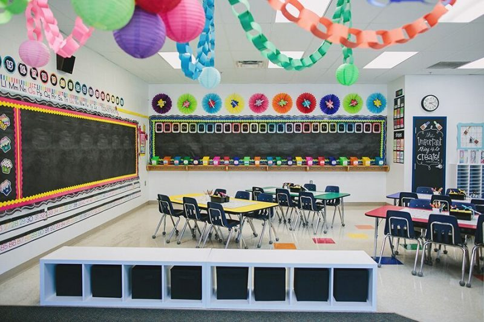

Mengukur Sudut Satuan Baku
Pada saat pembelajaran sedang berlangsung, pandangan kalian kadang kala melihat jam dinding yang ada di kelasmu. Muncul dibenak kalian, “jam berapa sekarang?”, “kurang berapa menit lagi istirahat?”. Edo melihat jam dinding menunjukkan pukul 09.00. Membentuk sudut terkecil berapakah antara jarum pendek dan jarum panjang pada pukul 09.00? Perhatikan gambar berikut ini dan temukan jawabanmu setelah mempelajari materi pengukuran sudut ini.
Ada 5 tahapan yang harus kita lakukan untuk memahami cara mengukur sudut dalam satuan baku dengan derajat busur Kelima tahapan tersebut adalah mengamati, bertanya, menalar, mencoba, dan mendiskusikan.
Info Tokoh
Abu Nasr Mansur ibnu Ali ibnu Iraq atau akrab disapa Abu Nasr Mansur (960M - 1036M) seorang Ahli Matematika muslim dari Persia. Beliau adalah penemu sudut (berkaitan Hukum Sinus), yang diungkapkan oleh Bill Scheppler dalam karyanya bertajuk al-Biruni: Master Astronomer and Muslim Scholar of the Eleventh Century. Abu Nasr Mansur telah banyak memberikan kontribusi yang penting dalam dunia ilmu pengetahuan. Abu Nasr Mansur banyak dikenal untuk penemuan tentang hukum sinus. Sumber:http://www.republika.co.id/berita/ensiklopediaislam/khazanah/0914/50088-abu-nasr-mansur-sang-penemuhukum-sinusdiakses2/2/2018 pukul 21.37
Tahukah kamu?
Satuan sudut yang sering digunakan untuk mengukur besar sudut adalah derajat (°), misalnya: 60° dibaca enam puluh derajat.
Mari
Pengamatan 1
Perhatikan gambar dan bacaan berikut dengan cermat!
Di ruang kelas atau di rumah kita terdapat jam dinding. Misalkan jam dinding tersebut menunjukkan pukul 03.00. Jarum pendek menunjukkan ke angka 3, sedangkan jarum yang panjang ke angka 12. Dua jarum tersebut membentuk sudut. Dapatkah kalian mengukur dan menentukan besar sudut terkecil antara dua jarum jam tersebut? Tulis ulang bacaan di atas dengan rapi. Gunakan kalimatmu sendiri! Kerjakan di buku tugasmu!
Pengamatan 2
Perhatikan gambar dan bacaan berikut dengan cermat!
Meli memesan pizza secara online. Setelah pesanan sampai di rumahnya, Meli membuka pesanan. Ternyata pizza tersebut telah terpotong menjadi delapan bagian yang sama. Ujung dari masing-masing potongan membentuk sudut. Dapatkah kalian mengukur dan menentukan besar sudut antara ujung pizza tersebut? Tulis ulang bacaan di atas dengan rapi. Gunakan kalimatmu sendiri! Kerjakan di buku tugasmu!
Tahukah kamu?
Sekitar abad 18 di Italia tepatnya di daerah Naples, jenis roti bundar ini dikenal dengan nama pizza. Pizza tanpa toping ini banyak dijual di jalan-jalan pasar dan identik dengan makanan rakyat terutama di daerah Naples yang terkenal sebagai daerah miskin. Pada tahun 1738, restoran pizza pertama di dunia dibuka di daerah Naples, Italia dengan nama Antica Pizzeria. Hingga sekarang, kota ini terkenal dengan sebutan ibukotanya pizza.
Mari Bertanya
Berikut contoh pertanyaan tentang pengukuran sudut dalam satuan baku.
- Bagaimana cara mengukur sudut dalam satuan baku?
- Bagaimana cara mengukur sudut dalam satuan baku dengan busur derajat?
Buatlah pertanyaan lainnya.
Ayo Menalar
Pengukuran sudut dalam satuan baku merupakan pengukuran sudut yang hasilnya menggunakan satuan derajat dan menggunakan busur derajat. Busur derajat merupakan salah satu alat untuk mengukur besar sudut dalam satuan baku. Satuan baku dari pengukuran sudut adalah derajat yang dilambang-kan dengan °, misalkan 30°. 30° dibaca tiga puluh derajat. Bagaimana cara membaca 45°? Perhatikan gambar busur derajat berikut!
Untuk mengukur sudut menggunakan busur, perhatikan langkah-langkah berikut.
- Letakkan titik pusat busur pada titik sudut yang akan diukur.
- Impitkan garis dasar busur dengan salah satu kaki sudut.
- Lihat garis sudut yang lain.
- Angka pada busur yang berimpit dengan kaki sudut menunjukkan ukuran sudut.
Pengamatan 1
Perhatikan jarum jam dinding dan sudut pada busur derajat.
- Jam dinding menunjukkan pukul 03.00. besar sudut terkecil yang terbentuk adalah 90°
- Jika jam dinding menunjukkan pukul 03.00, bagaimana besar sudut terkecil yang terbentuk?
- Jika jam dinding menunjukkan pukul 04.00, bagaimana besar sudut terkecil yang terbentuk?
- Jika jam dinding menunjukkan pukul 10.00, bagaimana besar sudut terkecil yang terbentuk?
Pengamatan 2
Perhatikan potongan pizza di atas dapat disajikan sebagaimana gambar berikut.
- Pizza terpotong menjadi 8 bagian yang sama. Besar sudut yang terbentuk adalah 45°.
- Jika pizza terpotong menjadi 4 bagian yang sama, bagaimana besar sudutnya?
- Jika pizza terpotong menjadi 6 bagian yang sama, bagaimana besar sudutnya?
- Jika pizza terpotong menjadi 10 bagian yang sama, bagaimana besar sudutnya?
Tahukah kamu?
- Angka 1 menunjukkan titik pusat
- Angka 2 menunjukkan garis harizontal
- Angka 3 menunjukkan garis vertikal
Contoh
Tentukan besar sudut di bawah ini!

Penyelesaian
Tahukah kamu?
- Busur derajat memiliki dua garis berlawanan yakni di bagian dalam lengkungannya dan di bagian luar. Sehingga alat ini berguna untuk mengukur sudut dari dua sisi yaitu sisi dalam dan sisi luar
- Derajat adalah ukuran sudut yang dapat dibentuk pada sebuah bidang datar, biasanya disimbolkan dengan °.
- Sudut 360° diperkenalkan oleh bangsa Babilon. Ini berhubungan dengan banyaknya hari dalam satu tahun kalender Babilonia, yaitu 360 hari.
- Besar sudut satu putaran penuh pada jam dinding adalah 360 °.